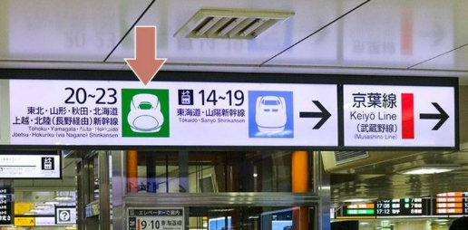

🌸 Julie's 東京獨旅
4/19
4/20
4/21
4/22
4/23
🗺️ 交通
📅 4/20 東京 ➔ 輕井澤
📍 前往北陸新幹線轉乘口
1
從八重洲中央口進入
從東京車站 1 樓「八重洲中央口」進入，尋找「東北、上越、北陸新幹線轉乘口」。
2
尋找 20-23 號月台
往輕井澤的新幹線位於 20-23 號月台。請跟著綠色新幹線標示前進！

🚆 新幹線購票小卡 (點擊翻轉給櫃檯)
11:04 ➔ 12:15
淺間 609號 (Asama)
東京 [23月台] ➔ 輕井澤 [3或4月台]
この列車の『乗車券』と『指定席券』をあわせて買いたいです。
(我要同時購買這班車的乘車券及指定席)
🚆 浅間 609号 (11:04發)
📍 東京 ➔ 軽井沢 (Karuizawa)
12:04 ➔ 13:20
淺間 611號 (Asama)
東京 [22月台] ➔ 輕井澤 [3或4月台]
この列車の『乗車券』と『指定席券』をあわせて買いたいです。
(我要同時購買這班車的乘車券及指定席)
🚆 浅間 611号 (12:04發)
📍 東京 ➔ 軽井沢 (Karuizawa)
13:04 ➔ 14:15
淺間 613號 (Asama)
東京 [20月台] ➔ 輕井澤 [3或4月台]
この列車の『乗車券』と『指定席券』をあわせて買いたいです。
(我要同時購買這班車的乘車券及指定席)
🚆 浅間 613号 (13:04發)
📍 東京 ➔ 軽井沢 (Karuizawa)
14:04 ➔ 15:20
淺間 615號 (Asama)
東京 [21月台] ➔ 輕井澤 [3或4月台]
この列車の『乗車券』と『指定席券』をあわせて買いたいです。
(我要同時購買這班車的乘車券及指定席)
🚆 浅間 615号 (14:04發)
📍 東京 ➔ 軽井沢 (Karuizawa)
🏨 輕井澤下榻飯店
📍 導航至 Glamday Style Karuizawa
🚲 輕井澤重點交通方式
舊輕井澤區：
妳的飯店在此區！周邊有舊輕銀座通、雲場池。建議租借「電動腳踏車」慢遊。
💡 以下巴士皆在「車站北口」搭乘：
1. 草輕交通巴士
🔹 舊輕井澤銀座通：於「旧軽井沢」下車 (4分)
🔹 舊三笠飯店：於「三笠」下車 (8分)
*暫停開放
🔹 白絲瀑布：於「白糸の滝」下車 (23分)
2. 西武觀光巴士
🔹 舊輕井澤銀座通：於「旧軽井沢」下車 (4分)
🔹 榆樹街小鎮：於「星野温泉トンボの湯」下車 (19分)
🔹 輕井澤Taliesin：於「塩沢湖」下車 (15分)
3. 町內循環巴士 (內/外回)
🔹 雲場池：於「六本辻・雲場池」下車 (內回 6分)
🔹 舊輕井澤銀座通：於「旧軽井沢」下車 (內回 4分)
🔹 中輕井澤：於「中軽井沢駅」下車 (內回 18分)
🔹 輕井澤Taliesin：於「風越公園」下車 (外回 24分)
📍 輕井澤車站出口指引
南口區：
出去後有計程車招呼站、王子購物廣場。
🚖 南口：計程車招呼站
🛒 南口：王子購物廣場
北口區：
出去後有自行車租借店及巴士站。
🚲 北口：自行車租借店
🚌 北口：巴士站
🔍 更多景點導航：
🌲 雲場池 (可騎自行車前往)
🛍️ 舊輕井澤銀座通
✍️
Day 2 備註：